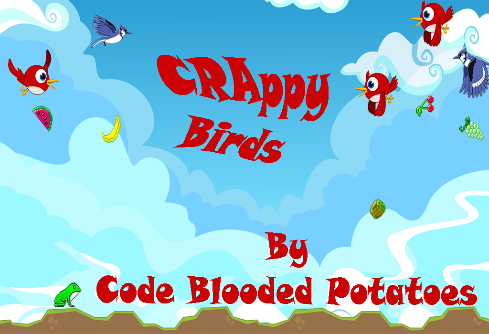

Techno Therapy
Fatema is an aspiring Computer Scientist. She has created some awesome technical projects throughout her 4 and a half years of studying Computer Science. She loves designing and developing games the most. Displayed below are only a few of her projects.

Fatema partcipated in She Innovated Hackathon 2019 where she came up with CodHer(). CodHer() is a fun computer game designed specifically for young girls to get them interested in technology as a field. Fatema won first prize for this project and would love to pursue this project further.Made in Python

Crappy Birds is another of her creative game inventions. Made in C++.

This project was made using a Neural Network in Python.